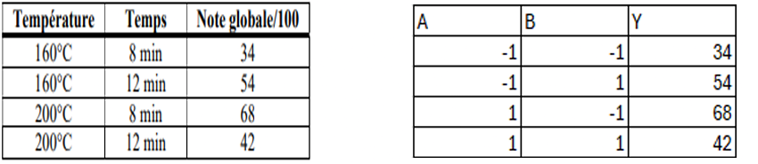
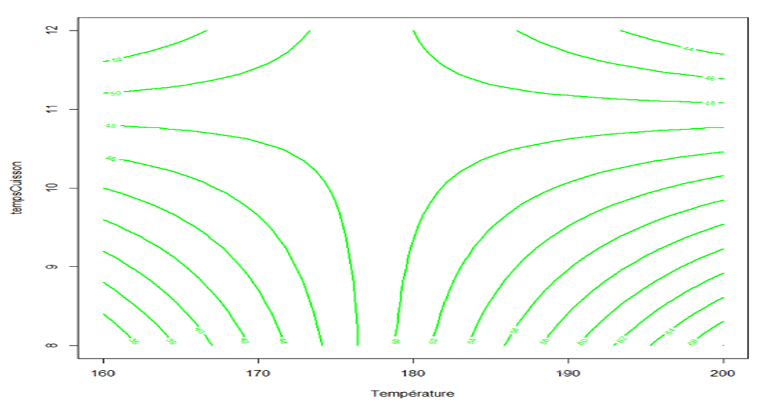
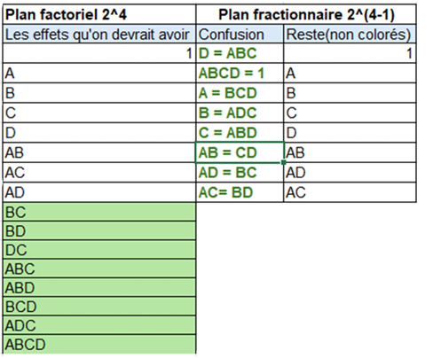
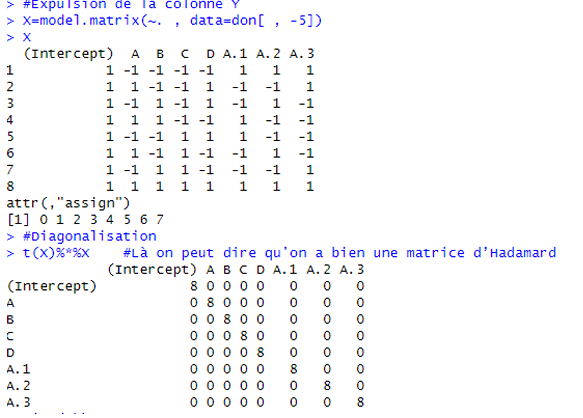
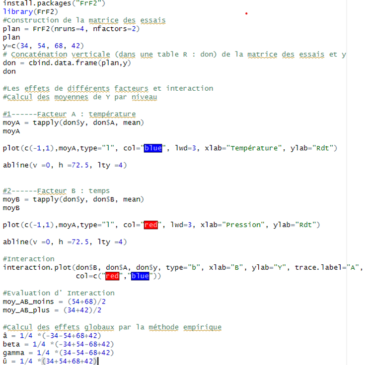
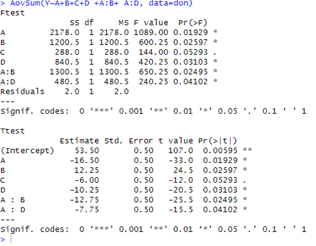

SAÉ 3.06 : Plan d'Expérience
Contexte
L’expérimentation statistique permet de modéliser et de comprendre un phénomène complexe en limitant le nombre d'essais. Dans le cadre de cette SAÉ, l'objectif était de concevoir la meilleure recette de cookies en optimisant la note globale attribuée par un jury de dégustateurs.
Nous avons étudié l'influence de quatre facteurs clés à deux niveaux chacun (Haut +1 et Bas -1) :
- Facteur A — Température du four : 160C ou 200C
- Facteur B — Temps de cuisson : 8min ou 12min
- Facteur C — Type de chocolat : Noir à 70% ou à 80%
- Facteur D — Type de pépites : Industrielles ou Vrais morceaux
Pour obtenir mathématiquement la certitude de la recette maximale via un plan factoriel complet, il aurait fallu réaliser $2^4 = 16$ expériences distinctes. Le projet explore les méthodologies de réduction du coût expérimental à l'aide du langage R.
Objectifs
- Modélisation de surfaces de réponses : Analyser et tracer les interactions géométriques entre facteurs.
- Plans factoriels fractionnaires : Construire un plan de type 2^{4-1} en exploitant les techniques de confusion d’alias (D = ABC).
- Validation matricielle : Vérifier les propriétés d'orthogonalité via les matrices d'Hadamard.
- Sélection pas à pas (Stepwise) : Purger un modèle saturé pour isoler les paramètres hautement significatifs.
Méthodologie et Analyse
Phase 1 : Plan complet à 2 facteurs (2^2) — Entraînement du Jury
Pour initier l'étude, nous nous sommes d'abord focalisés sur deux facteurs : la température (A) et le temps (B). Les résultats collectés ont mis en évidence une forte **interaction négative**. En effet, lorsque la température est basse (160^C), le rendement augmente de 20 points avec le temps, tandis qu'à température haute (200^C), il s'effondre de 26 points. Les courbes de réponses non parallèles confirment cette dépendance.

En appliquant les formules de changement de variable pour coder les niveaux réels de [-1; +1], nous avons établi l'équation de prédiction suivante : f(x, y) = -510 + 3,15x + 51y - 0,2875xy Où x représente la température réelle et y le temps de cuisson en minutes.
Prédictions issues du modèle :
- Pour 190^C et 10min : Note estimée de 52,25/100.
- Pour 185^C et 12min : Note estimée de 46,50/100.
- Ciblage de la note 80 : Atteignable avec les couples (214C ; 8 min) ou (205C ; 7min).


Phase 2 : Plan fractionnaire (2^{4-1) — Optimisation globale
Afin de ne pas saturer les dégustateurs, nous avons réduit le protocole à 8 essais au lieu de 16. Pour intégrer le quatrième facteur (D), nous l'avons confondu avec l'interaction d'ordre maximal en posant le générateur de définition : D = ABC.
Vérification de la matrice d'Hadamard :
Après l'adjonction des colonnes d'interactions calculées sous R, nous avons validé le produit matriciel diagonalisé. La structure répond parfaitement aux critères d'Hadamard : toutes les composantes valent 1 ou -1 et les lignes sont strictement orthogonales entre elles, garantissant des estimations indépendantes.


Phase 3 : Algorithme de sélection pas à pas du modèle optimal
Le plan initial à 8 lignes et 8 paramètres étant structurellement saturé (degré de liberté égal à 0), nous avons appliqué une stratégie d'élimination par étapes. Nous avons identifié et exclu l'effet le plus faible en valeur absolue (l'interaction AC = -0,5).
Une fois le modèle libéré de sa saturation, nous avons mené des tests de significativité de Student à un seuil de risque choisi à alpha = 10% (exclusion de tout facteur ayant une p-value > 0,1).


Résultats et Modèle Final
À l'issue de la sélection pas à pas, tous les paramètres restants affichent une p-value < 0,06, validant leur forte contribution. L'équation finale estimée du modèle optimal est :
Apprentissages Critiques Validés
Cette SAÉ de modélisation statistique avancée m'a permis de valider les jalons d'apprentissage critiques suivants :
AC 1601 | Concevoir et structurer des plans d'expériences optimisés
Aptitude à définir un espace de recherche, à générer des plans factoriels fractionnaires $2^{k-p}$ via générateurs d'alias et à en valider l'orthogonalité rigoureuse par les structures d'Hadamard.
AC 1602 | Modéliser mathématiquement des surfaces de réponses
Calcul des coefficients de régression, isolation des effets d'interactions multidimensionnelles et cartographie géométrique 2D/3D (courbes d'iso-niveaux) pour l'aide à la décision.
AC 1603 | Sélectionner et valider la significativité d'un modèle statistique
Capacité à traiter la saturation de plans de recherche, à mettre en œuvre des algorithmes de sélection pas à pas (Stepwise) et à évaluer la significativité des variables (Test t de Student, p-value).
Conclusion et Valeur Ajoutée (Bonus)
Cette démarche rigoureuse par plans d'expériences a permis de décoder précisément le comportement du jury d'évaluation. Grâce à l'équation prédictive finale, nous avons pu isoler la configuration de facteurs permettant d'approcher la note maximale.
La recette optimale identifiée pour une note cible de 86,5/100 est :
Une température basse (180^C), un temps de cuisson court (8min), du chocolat corsé à 80% (C = +1) et de vrais morceaux de chocolat en pépites (D = +1).
Consulter le rapport complet (.R)
⬅ Retour au portfolio